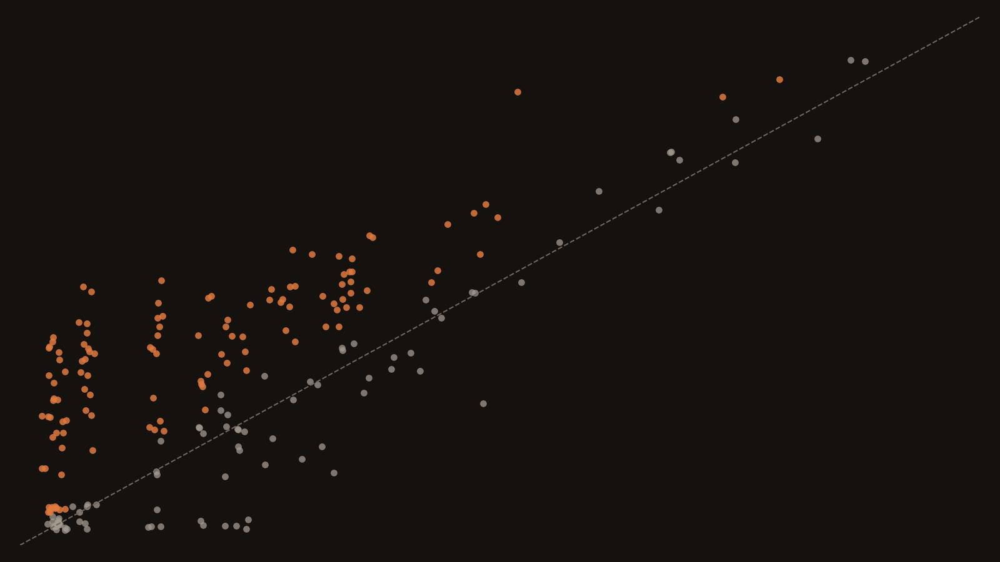
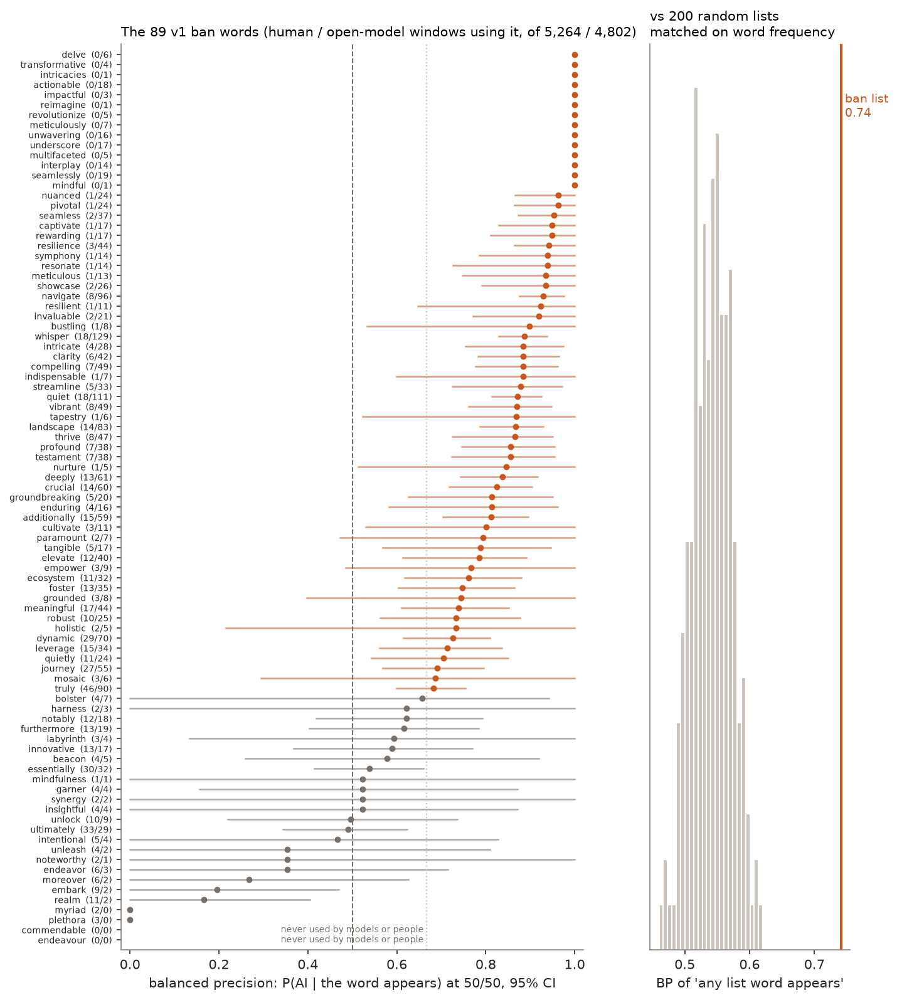
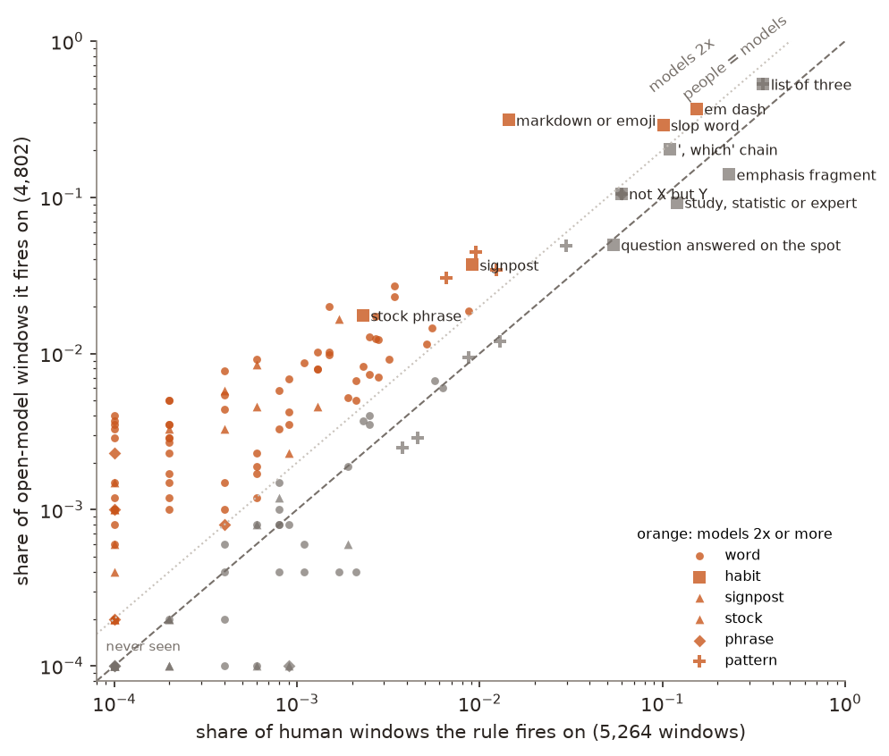
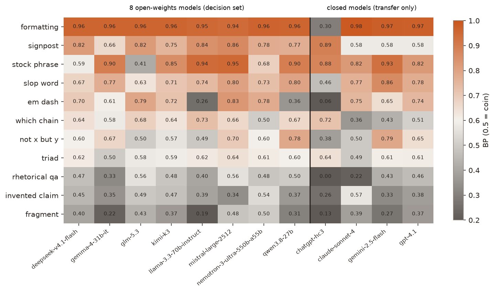
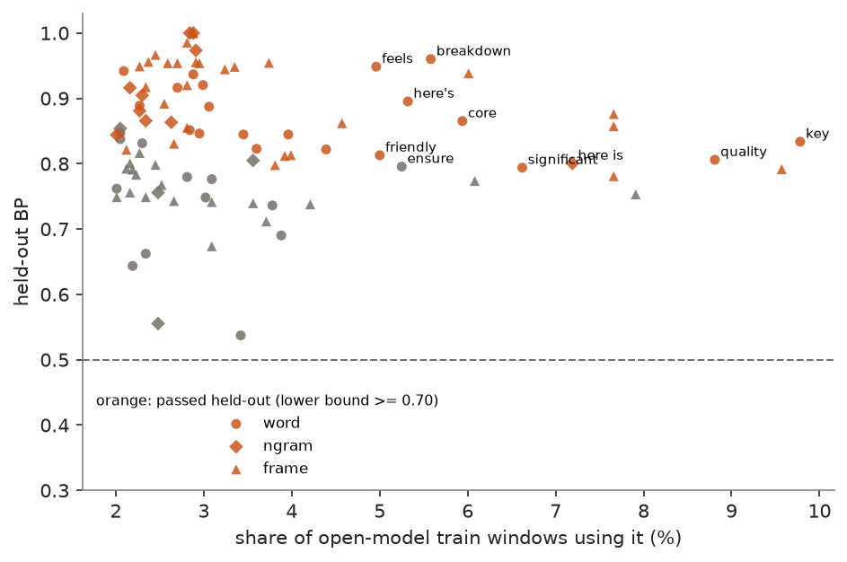
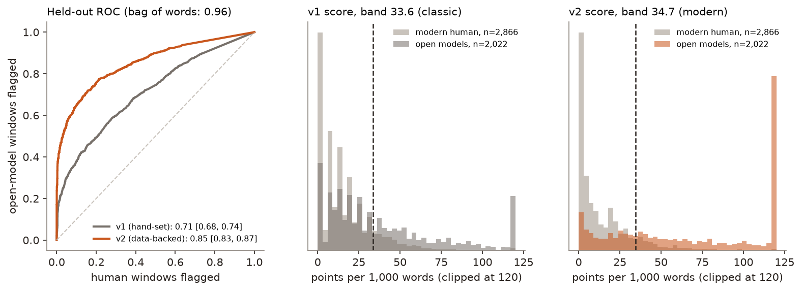
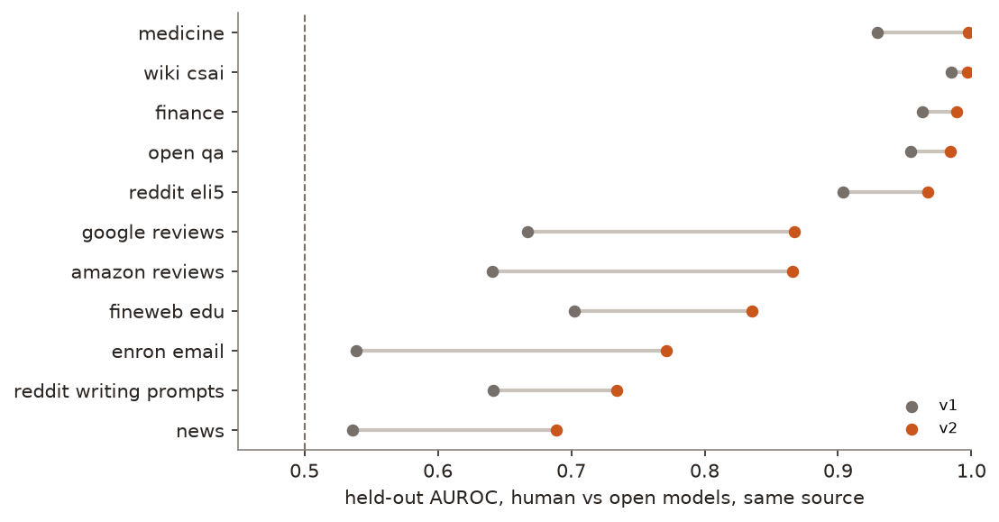

← Research·Model voice · Episode 8·Experiments·
Which slop rules actually separate AI from human text?
Our slop score and our rewriting tool run on lists written by hand: 89 “AI words”, eleven habits, stock phrases and named patterns, none of them checked against people. We checked every rule on modern human prose and on eight open-weights models writing the same pieces, then rebuilt the lists from the data.

results/rules_v1_all.csv.Summary: the short answer and the key results
In short
Which slop rules actually separate AI from human text?
Markdown and emoji, signposts (“here’s why”, “the short answer”), stock phrases and most of the “AI words” do; three habits point the wrong way. On 5,264 windows of modern human prose and 4,802 replies from eight open-weights models to the same openings and questions, people wrote one- or two-word sentences, number-and-study claims and questions they answer themselves more often than the models did. Of the 89 ban words, 23 are used by models less than twice as often as people (“realm”: 11 human windows, 2 model windows), and 16 are never used by people at all. The em dash is a real tell for most models but not all: Llama-3.3 and Qwen3.8 use fewer than people. Dropping what fails, adding 28 words and 10 phrases the data found, and refitting the weights raised the score’s held-out AUROC from 0.71 to 0.85, and from 0.69 to 0.83 on closed models it never saw. A plain bag of words still beats every rule list (0.96).
Key results
| What we tested | Result | Compared with |
|---|---|---|
| Do the 89 ban words fire on people? | 23 are used by models less than twice as often as people; 16 are never used by people; 29 were dropped from the list | As a list: balanced precision 0.74, above every one of 200 frequency-matched random lists (highest 0.62) |
| Which habits separate? | Markdown or emoji 0.96, stock phrases 0.88, signposts 0.80, slop words 0.74, em dash 0.71 (balanced precision, 0.5 = coin) | Point the wrong way: emphasis fragments 0.38, invented claims 0.44, answered questions 0.48. Weak: lists of three 0.60, not X but Y 0.64 |
| Are the 10 named patterns precise? | 4 of 8 regex patterns are noise (Name dropping, Empty commentary, Phantom experts, Unnecessary caveats); 5 survive after removing their noisy parts | The two detector-based patterns (not X but Y, lists of three) fire on 6% and 36% of human windows |
| What does the data find that the lists lack? | 59 of 93 candidates pass held-out validation: a sentence opening “Here is” (5.8% of model windows, 0.4% of human), “genuinely”, “breakdown”, “feels”, “key”, em-dash frames | Pre-registered bar: 20 |
| Does the refitted score separate better on held-out text? | AUROC 0.709 [0.685, 0.737] → 0.851 [0.834, 0.871]; at the band limit, 68% of model windows over it instead of 43%, at the same 12% of human windows | Closed models 0.695 → 0.832; bag of words 0.962; window length 0.557 |
| How do the rules treat this site’s own notes? | v1 put 28% of note windows over its band; v2 puts 5.5% | 98 notes, 1,879 windows; the fragment rule fired on 62% of them |
01Introduction
Every list of AI-writing tells warns against “realm”. In 5,264 windows of human prose people used it in 11; in 4,802 open-model replies to the same openings and questions the models used it in 2. Meanwhile “Here is”, on nobody’s list, opens a sentence in 5.8% of the models’ held-out replies and in 0.4% of human ones. A rule list is a guess about what models do more than people, and nobody had checked ours.
What is known: chat models over-use some words. An analysis of PubMed abstracts found hundreds of “excess” words after ChatGPT’s release (arXiv 2406.07016); Wikipedia editors keep a guide to signs of AI writing; EQ-Bench’s slop score ships a word list; and Antislop (arXiv 2510.15061; auto-antislop) finds a model’s over-used words and phrases by comparing their frequency with a human baseline. What is missing: rule by rule, how often each one fires on the kind of prose people write now (reviews, email, forum answers, news), against current models writing the same thing. Our lists came from the sources above plus 11 words one model over-used, and our human band came from essays published before 1929 and Wikipedia.
| Source | Per-rule human rate | Modern human prose | Same prompts for both sides | Several current models | Held-out check |
|---|---|---|---|---|---|
| Excess vocabulary in PubMed abstracts | ✓ (word frequency) | ✓ one genre | ✗ | ✗ (the field, not a model) | ✗ |
| Wikipedia “Signs of AI writing” | ✗ | ✗ | ✗ | ✗ | ✗ |
| EQ-Bench slop-score list | ✓ (word frequency) | ✓ | ✗ | ✓ | ✗ |
| Antislop | ✓ (ratio) | ✓ | ✗ | one model at a time | ✗ |
| Our v1 lists | ✗ | ✗ (pre-1929 essays, Wikipedia) | ✗ | one model (Qwen3-4B) | ✗ |
| This note | ✓ (each rule, with intervals) | ✓ 11 sources | ✓ same opening or question | ✓ 8 open + 4 closed | ✓ split by prompt |
This note contributes:
- A measurement of every rule we ship (89 words, 11 habits, 18 signposts, 15 stock phrases, 8 tool phrases, 10 named patterns and their 60 parts), with intervals, per model and per source (rules_v1_all.csv, and the explorer in section 4.8).
- A negative result for three habits and four named patterns: people do them as often as models, or more.
- Data-backed lists: 59 new candidates that held up on held-out text, and v2 of the score (lists, weights and a modern human band), which our rewriting tool now uses.
- A baseline: a bag of words trained on the same split, to show what a word list leaves on the table.
02Setup
Matched prompts. 620 prompts, each tied to one human text. 420 come from EditLens’s human texts (arXiv 2510.03154), 70 from each of six sources: news, Reddit WritingPrompts stories, FineWeb-Edu web pages, Amazon reviews, Google reviews and Enron email. The model gets the human text’s first sentence (“Here is the first sentence of a news article: … Write the rest of it, about 450 words”) and both sides are scored from the second sentence on, so they start after the same line. 200 come from HC3 (Hello-SimpleAI/HC3, CC BY-SA 4.0), 40 questions from each of five domains (Reddit ELI5, open questions, computer-science Wikipedia, finance, medicine); the model answers the question as a user would ask it. HC3’s human answers are tokenised (“does n’t”); we put them back together before scoring.
Models. Eight open-weights models through OpenRouter, temperature 0.7, reasoning off where the endpoint allows it (GLM-5.3 at its lowest effort used 0-9 reasoning tokens per reply): DeepSeek-V4.1-Flash, GLM-5.3, Kimi-K3, Qwen3.8-27B, Gemma-4-31B-it, Nemotron-3-Ultra-550B, Mistral Large 3 and Llama-3.3-70B-Instruct. Of 4,840 replies, 4,802 were long enough to score. No closed-model API was called. Closed models appear only through texts others already published: EditLens’s GPT-4.1, Claude Sonnet 4 and Gemini 2.5 Flash texts (300 each) and HC3’s ChatGPT answers (196). Those were never used to choose anything.
Human side. The 620 matched human texts plus a pool of up to 600 more human texts from each of the same 11 sources (5,264 in all), added after a dry run showed 620 were too few (section 3). RAID’s human texts (liamdugan/raid, MIT; Reddit, Wikipedia, news, poetry, books, recipes, abstracts, reviews; 2,045) are a second modern set, and the 318 classic passages behind the old band a third.
Windows. Every text is cut to a window: its sentences from the start until at least 150 words (at most 250; texts under 60 words dropped). Mean length: 134 words human, 144 model. A rule fires on a window when it matches at least once. Windows are split 60/40 into train and test by prompt group (a human text and the eight replies to its prompt always land together).
Measures. For each rule: the share of human windows it fires on (h), the share of model windows (a, also its recall), balanced precision a/(a+h), and Antislop’s over-representation ratio (uses per word in model text over uses per word in human text). Intervals are 95% bootstraps over prompt groups. Pre-set verdicts: keep (BP lower bound above 0.60, fires on at least 0.5% of model windows), noise (lower bound at or below 0.55), rare (fires on under 0.5% of model windows), weak (the rest). For list decisions we used a plainer cut, set after reading the first tables (section 3): drop an item when models use it less than twice as often as people (BP under 2/3) or never.
What counts as success, fixed in the plan: a rule list (1) beats random word lists of the same size and word frequency, (2) holds on held-out prompts, not only the ones it was chosen on, (3) carries over to closed models that played no part in choosing it, and (4) a refitted score raises held-out AUROC without raising the share of human text flagged at its band limit.
03How the study was run
- Plan. Corpora, measures, verdicts, discovery filters, the refit and eight predictions were written and committed before any rule was scored.
- Prompts and generation. 620 prompts × 8 models, one reply each: 4,840 replies. OpenRouter refused further calls at $6.08 when the account ran out of credits, leaving Mistral Large 3 with 502 of 620 and DeepSeek with 618.
- Windows. 15,213 windows: 5,264 human and 4,802 open-model (the decision set), 1,096 closed-model, 3,637 RAID, 414 classic.
- Score every v1 rule on all, train and test windows, per model and per source (211 rules and pattern parts); the ban list against 200 frequency-matched random lists.
- Discover on train. Words, 2-4-word phrases and function-word frames (content words replaced by X, as in “— the X”), filtered by ratio, support, and spread over sources, models and prompts: 93 candidates. Validate each on test.
- Refit on train. Write the v2 lists, fit non-negative weights by logistic regression on per-1,000-word habit rates (5,958 train windows), and measure the v2 band on 4,443 modern human train windows.
- Compare on test (2,086 matched human, 2,866 modern human, 2,022 open-model, 1,096 closed-model windows), with ablations, two baselines and the site’s 98 notes.
| Fixed before any rule was scored | Changed after |
|---|---|
| Sources, prompt design, windows, the split, BP and the ratio, the verdict rules, the discovery filters and validation bar, the refit method, the v1 rule set (frozen from the lab at the commit before this note), predictions P1-P8, the $15 cap | Before scoring: Mistral-Large-4 replaced by Mistral Large 3 (its endpoint spent 2,000-3,000 reasoning tokens per reply even at the lowest setting). After a dry run on 70% of generations, before any decision: the same-source human pool added (359 train windows made one human use swing a ratio about 20×) and a topic guard for discovery (fires on model replies to at least 10 prompts). After reading the v1 tables: the list rule “drop below 2/3 or never” replaced “drop if noise” (the noise verdict also caught rare words with wide intervals, such as “tapestry” at 1 human and 6 model windows); six discovered items left out by a written reason (four name a subject, two are pieces of the disclaimer “I am an AI”); two discovered items whose held-out lower bound was at or below 0.55 left out (“comprehensive”, “over time”); “here is” shipped only at the start of a sentence (it also caught “the food here is”); under v2, habits with weight 0 are no longer highlighted. The held-out comparison measures the lists as shipped |
Conditions: CPU only, on a laptop; every step after generation takes under 15 minutes. OpenRouter $6.08 by its per-call cost (spend.jsonl), $0.36 of it on the replaced Mistral model. No GPU.
04Results
4.1 Most ban words hold up as a list, but 23 of 89 are used by people nearly as often as by models
Figure 1 places each of the 89 ban words by its balanced precision. Models use 66 of them at least twice as often as people, and 16 are never used by people at all (“delve”, “underscore”, “actionable”, “seamlessly”, “unwavering”). 23 fall below the 2× line: “realm” (11 human windows, 2 model), “embark” (9, 2), “moreover” (6, 2), “ultimately” (33, 29), “essentially” (30, 32), “unlock” (10, 9), “innovative” (13, 17), “notably” (12, 18). Two more, “commendable” and “endeavour”, appear nowhere. Several famous tells are rare in this decision set: “delve” in 6 of 4,802 model windows, “tapestry” in 6. The words models lean on now are plainer: “whisper” (129 model windows, 18 human), “quiet” (111, 18), “navigate” (96, 8).
As a list the words still work: “any ban word appears” has BP 0.74, above all 200 random lists with each word matched to a ban word’s frequency (highest 0.62, 95th percentile 0.59). The list fires on 29% of model windows and 10% of human ones.

4.2 Formatting, signposts and stock phrases separate; fragments, invented claims and answered questions point the wrong way
Figure 2 shows every rule at once, and Figure 3 each habit per model. Markdown or emoji is the strongest habit (BP 0.96: 31% of model windows, 1.4% of human), then stock phrases (0.88), signposts (0.80), slop words (0.74) and the em dash (0.71). Three habits fire more on people than on models: emphasis fragments, sentences of one or two words (23% of human windows, 14% of model; BP 0.38), invented studies and statistics (a percentage, “studies show”; 12% against 9%; 0.44) and questions answered on the spot (5.4% against 5.0%; 0.48). People write “Thanks.”, “Take care.”, “Hello.” and “Good luck.” in email and answers, and they quote real numbers. Part of the fragment count is our own sentence splitter cutting “U.S.” and “a.m.” into one-letter sentences; with those removed the rule still points the wrong way (14% of human windows against 9% of model; BP 0.39). Lists of three (36% of human windows, 53% of model; 0.60) and “not X but Y” (6.0% against 10.5%; 0.64) are weak: models do them more, but a rule that fires on a third or a sixteenth of human texts makes many false alarms.
The old setting flattered these rules. Against the 318 classic passages, “not X but Y” scored BP 0.73, invented claims 0.65 and slop words 0.83 (rules_v1_classic.csv): essays from before 1929 rarely quote percentages or “studies”, and never sign off “Thanks.”.

The em dash depends on the model. It is a strong tell for Mistral Large 3 (BP 0.83), GLM-5.3 (0.79), Nemotron (0.78), Claude Sonnet 4 (0.75) and GPT-4.1 (0.74), and points the other way for Llama-3.3-70B (0.26) and Qwen3.8-27B (0.36), which use fewer em dashes than people. ChatGPT’s 2022 answers in HC3 almost never used one (0.06). Signposts are strong for every open model and for ChatGPT, and weak for the three closed models’ EditLens texts (0.58), which continue an article rather than answer a question.

results/rules_v1_by_model.csv.4.3 Four of the eight regex named patterns are noise; five survive once their noisy parts are removed
Our rewriting tool explains each flag with a named pattern (names from GPTZero’s AI patterns, regexes ours). Name dropping (BP 0.40), Empty commentary (0.39), Phantom experts (0.52) and Unnecessary caveats (0.48) fire on people as often as on models. People write “when it comes to”, “of course,” (1.0% of human windows, 0.1% of model), “studies have shown” and “companies like Google” at least as often. Scoring each part of each pattern (60 parts, Table 1) showed what to keep: “great question” (1 human window, 44 model) and “here’s a breakdown” stay in Chatbot language, while “let me know if” (101 human, 112 model), “feel free to” and “happy to help” go.
| Pattern | v1 BP | v2 | Parts removed (BP under 2/3, or never used by models) |
|---|---|---|---|
| Overblown importance | 0.82 | kept, 11 of 12 parts | more than ever |
| Sales-pitch tone | 0.82 | kept, 9 of 11 | unlock, next level |
| Dressed-up verbs | 0.73 | kept, 5 of 8 | boasts, utilise, facilitate |
| Chatbot language | 0.62 | kept, 3 of 10, plus “I am an AI” / “as an AI” | feel free to, let me know if, happy to help, I hope this helps; in conclusion, to sum up, I hope you’re doing well (never used) |
| Unnecessary caveats | 0.48 | kept, 2 of 7 | of course, it’s worth noting; it’s important to remember, everyone is different, results may vary (never used) |
| Name dropping | 0.40 | dropped | both parts |
| Empty commentary | 0.39 | dropped | all six parts |
| Phantom experts | 0.52 | dropped | all four parts |
| Not just X but Y | 0.64 | dropped as a pattern (still a habit in the score) | fires on 6% of human windows |
| Everything in threes | 0.60 | dropped as a pattern (still a habit in the score) | fires on 36% of human windows |
| Stock phrasing (new) | n/a | added | a sentence opening “Here is / Here are”, “for the price”, “the primary”, “a detailed”, “making it”: found in the data, passed held-out validation |
The rewriting tool’s eight stock phrases for the rewrite prompt fared worse: “let’s dive in” and “in conclusion” never appeared in any open-model window and “in today’s fast-paced world” in one, and “at the end of the day” appeared only in human text (5 windows). Two stayed (“here’s the thing”: 0 human, 11 model; “plays a crucial role”: 0, 5).
4.4 The data finds 59 rules the lists lack
Discovery on the train windows produced 93 candidates (33 words, 14 phrases, 46 frames) that models use at least 4 times as often per word, in at least 2% of model windows, across at least 4 sources, more than people in at least 5 of the 8 models, and in replies to at least 10 prompts. 59 passed held-out validation (BP lower bound ≥ 0.70 on test): 21 words, 10 phrases and 28 frames (Figure 4). The most common are plain words: “key” (8.7% of held-out model windows, 1.7% of human), “breakdown” (6.9%, 0.3%), “feels” (6.2%, 0.3%), “genuinely” (2.3%, 0.1%), “essential”, “ensure”, “reliable”, “incredibly”. The strongest phrases are formulas: a sentence opening with “Here is” (5.8%, 0.4%), “for the price” in reviews, “a detailed”, “making it”. Frames catch shapes no word list can: an em dash before “the” (“— the X”: 3.5%, 0.2%), a contrast “, not a” (3.3%, 0.3%) and the disclaimer “: I am” (3.2%, 0.05%).

results/candidates.csv.The v2 word list keeps 60 v1 words and adds 28 found here; the v2 stock phrases keep 7 of 15 and add 10; the signposts keep 6 of 18. Every decision and its numbers are in list_decisions.csv, and the shipped word file carries each word’s train and held-out BP in a comment.
4.5 The refitted score separates held-out text better (0.71 → 0.85) at the same false-alarm rate, and carries over to closed models
The refit gives weight to slop words (3.0), stock phrases (2.8), signposts (2.7), formatting (2.2), not X but Y (1.7), which-chains (1.4), the em dash (0.7) and lists of three (0.5), and zero to fragments, invented claims and answered questions. The v2 band (90th percentile of 4,443 modern human train windows) is 34.7, close to v1’s 33.6 by coincidence. On held-out windows, AUROC rose from 0.709 [0.685, 0.737] to 0.851 [0.834, 0.871] (Figure 5, Table 2). At each version’s band limit both flag about 12% of modern human windows (12.5% and 12.3%), but v2 puts 68% of open-model windows over the band against v1’s 43%. On the closed models, which played no part in any choice, AUROC rose from 0.695 to 0.832, and the share over the band from 39% to 63%.

| Score | AUROC, open models | AUROC, closed models | AUROC, RAID | Human over band | Open models over band |
|---|---|---|---|---|---|
| window length alone (baseline) | 0.557 | 0.573 | |||
| v1: hand-set lists and weights, band 33.6 | 0.709 [0.685, 0.737] | 0.695 | 0.677 | 12.5% [11.3, 13.7] | 42.7% |
| v1 with its band re-measured on modern text (37.7) | 0.709 | 0.695 | 0.677 | 10.3% | 39.5% |
| v1 lists + v2 weights | 0.796 | 0.799 | 0.760 | ||
| v2 lists + v1 weights | 0.778 | 0.737 | 0.687 | ||
| v2: data-backed lists and weights, band 34.7 | 0.851 [0.834, 0.871] | 0.832 | 0.773 | 12.3% [11.0, 13.5] | 67.7% [64.0, 71.4] |
| bag of words (TF-IDF logistic regression, trained on train windows) | 0.962 | 0.933 |
Weights and lists each help, and together most. New weights alone gave 0.796, new lists alone 0.778, both 0.851. Removing one habit at a time from v2 shows where the separation lives: slop words (AUROC −0.077 without them) and formatting (−0.045); the em dash costs 0.009, and every other habit 0.003 or less. A bag of words still wins (0.962): a few dozen words and regexes leave a lot on the table, which is the price of rules a writer can read and act on.
Every source and model improved (Figure 6), but unevenly: news stayed hardest (0.54 → 0.69), then stories (0.64 → 0.73) and email (0.54 → 0.77), where model text is closest to how people write; answers to questions were already easy (0.90-0.98 → 0.97-1.00), because chat models format and signpost their answers. Per model, v2 ranges from 0.79 (DeepSeek-V4.1-Flash) to 0.91 (Qwen3.8-27B); on closed models, 0.83 (GPT-4.1), 0.90 (Claude Sonnet 4, Gemini 2.5 Flash) and 0.63 (ChatGPT’s 2022 answers, which use few of the newer habits).

results/compare_by_source.csv.The false alarms move between genres. At the band limit v2 flags fewer human news windows (11% against 16%), poetry (6% against 14%) and medical answers (9% against 15%), and more Google reviews (21% against 8%) and RAID abstracts (24% against 13%), where “key”, “significant” and “critical” are ordinary words. A writer of abstracts or reviews will see more flags under v2.
4.6 The boring explanations: topic, length, the prompt, tokenisation and word senses
- Topic. Both sides answer the same opening or question, and the human pool comes from the same 11 sources. Discovered items had to fire in at least 4 sources, more than people in at least 5 models and in replies to at least 10 prompts; topic words such as “kitchen”, “screen” and “blue”, which passed a dry run, are not among the final candidates.
- Length. Windows cap length (134 against 144 words on average), and window length alone separates at 0.557.
- Our prompt. “Reply with the text only” could have produced a preface habit. “Here is” is not one: only 24 of the 340 model windows that contain it have it in the first 40 characters; most are inside HC3 answers (“Here is a breakdown of …”).
- HC3’s tokenised human answers. Without putting “does n’t” back together, every contraction-based rule would have read as a model habit. HC3 is also reported per domain (Figure 6), and the EditLens sources, which need no repair, show the same ordering of habits.
- Our sentence splitter. “U.S.”, “a.m.”, initials and version numbers (“Llama-3.”) become one-letter sentences that the fragment and answered-question rules count. Removing those still leaves the fragment rule below a coin (BP 0.39); both rules weigh 0 in v2.
- Word senses. Reading the 40 human held-out windows v2 scores highest: “keys” on a keyboard, “Foster” as a surname, spaced hyphens used as list separators in email (the em-dash rule counts “ - ” between words), “ecosystem” and “dynamic” in ecology and physics texts. A word list cannot tell these apart.
4.7 On this site’s own notes, v1 flagged 28% of windows and v2 flags 5.5%
We ran both scores on the text of the 98 notes published on this site (1,879 windows of paragraphs and list items; tables, code and captions skipped), a genre none of the corpora cover. These are not labelled human or AI; the question is only how often the rules fire on technical prose of the kind our rewriting tool will see. v1 put 28.1% of note windows over its band; v2 puts 5.5% over its own. The difference is mostly the habits that point the wrong way: the fragment rule fired on 62% of note windows (version numbers such as “Llama-3.” and short sentences such as “Post-mortem.” and “Partly.”), invented claims on 39% (every reported percentage), and lists of three on 45%. “harness” (a test harness) fired on 6% of windows and is no longer a ban word.
4.8 Every rule, searchable
Every v1 rule (on all windows) and every discovered candidate (on held-out windows), with its v2 decision. Search a word or phrase, or filter by kind; click a column name to sort.
| Kind | Rule | Verdict | v2 |
|---|
Human and Model: share of windows the rule fires on (v1 rules: 5,264 human and 4,802 model windows, all splits; discovered candidates: 2,086 and 2,022 held-out windows). From report/data.js, written by make_figures.py.
05Implications for AI safety
Rule lists like these are used to judge people: teachers paste essays into checkers, editors flag submissions, and tools tell writers what to change. A rule that fires on people as often as on models produces confident-looking evidence against a person who did nothing. Here, three of eleven habits and four of ten named patterns did exactly that on modern prose, and the old human band looked fine only because it was measured on essays from before 1929. Lists also age with the models: “delve” is rare in current open models, ChatGPT’s 2022 answers use almost none of the em dashes GPT-4.1 does, and some of the most common current tells (“Here is”, “genuinely”, “breakdown”) are on no list. Before a rule is used to flag anyone’s writing, measure how often it fires on recent human prose of the same genre, and re-measure when the models change.
06Predictions
Eight predictions were written before any rule was scored and are scored mechanically by predictions.py.
| # | Prediction (confidence) | Threshold | Result | Verdict |
|---|---|---|---|---|
| P1 | Many ban words are noise or rare on modern human text (70%) | ≥ 25 of 89 with verdict noise or rare | 62 (33 noise, 29 rare) | hit |
| P2 | Not X but Y and signposts are the two strongest habits (45%) | both top 2 by BP among habits on ≥ 2% of model windows | markdown 0.96, signposts 0.80; not X but Y 6th (0.64) | miss |
| P3 | The em dash is weak (40%) | BP < 0.65 | 0.705 | miss |
| P4 | The data finds rules the lists lack (60%) | ≥ 20 candidates pass held-out validation | 59 | hit |
| P5 | Refitting helps (60%) | v2 − v1 held-out AUROC ≥ +0.05 | +0.142 | hit |
| P6 | The old band does not transfer to modern human text (55%) | v1 flags ≥ 15% of modern human windows at 33.63 | 12.5% | miss |
| P7 | Several named patterns are noise (55%) | ≥ 3 of 8 regex patterns noise | 4 | hit |
| P8 | Rules found on open models carry over to closed models (50%) | ≥ 70% of v2 word and phrase rules with BP ≥ 0.70 on the closed set | 75.9% of 108 | hit |
Post-mortem. What surprised me: the habits that point the wrong way. I expected “not X but Y” to be the strongest tell and the em dash the weakest; on modern prose the contrast frame is weak and the em dash is real but model-specific. P1 was too easy as written: “rare” counted words people never use, so 62 says less than the 23 words below the 2× line. P6 missed because the old band happened to sit near the modern 88th percentile: the band transferred, the rules inside it did not. What I would change: register a per-rule decision cut (BP 2/3) in the plan rather than a verdict built for reporting, check the sentence splitter on human text before scoring sentence-level habits, and generate more human-matched prompts instead of adding a pool. The lesson: a human band can look calibrated on old text while the rules inside it are noise on new text; score the rules, not only the band.
07What this does not show
- One reply per prompt per model, short windows. Rates are per 150-250-word window; a rule that fires once per 1,000 words looks rare here. Longer texts raise every firing rate on both sides.
- The decision set is open-weights models only. Closed models enter only through texts others published, in two regimes (EditLens continuations, HC3’s 2022 answers), not the chat replies people paste today. The transfer result (0.83) is encouraging, not a measurement of today’s closed chat assistants.
- The human texts may contain some AI text. EditLens, HC3 and RAID human texts were collected as human, mostly before late 2022; we did not screen them with a detector.
- The prompts shape the replies. “Write the rest of it, about 450 words, reply with the text only” and bare HC3 questions are two styles of request; a system prompt, a persona or a rewrite request would change which habits appear. Our rewriting tool mostly sees drafts written from short requests, closer to HC3.
- Several decisions were made after reading tables. The drop rule, six topic exclusions, two held-out exclusions, the sentence-start form of “Here is” and hiding zero-weight habits are listed in section 3; the v2 comparison measures the lists as shipped, so it is slightly optimistic for those items.
- Word lists cannot read senses. “key” the adjective and “keys” on a keyboard count the same; a capitalised surname counts as a word.
- Mistral Large 3 has 502 of 620 replies and DeepSeek 618: the account ran out of credits. Per-model numbers carry their own n.
- Not tested: other languages, very short texts (under 60 words), and whether a writer who follows the v2 advice reads as more human, or more like themselves, to people.
08Reproduce it
reproduce.sh runs every step; --dry-run lists them and --scores skips prompt building and generation. Everything after generation runs on a laptop CPU in under 15 minutes. The texts stay local (EditLens is research-only and gated); results/ (listed in the README) holds every count and rate behind the figures. The v2 rules ship in packages/deslop: score(text, rules="v2"), use_rules("v2") or DESLOP_RULES=v2; v1 stays the default so earlier notes reproduce.
experiments/slop-rules/reproduce.sh --dry-run
experiments/slop-rules/reproduce.sh --scores # needs the cached generations09What’s next
- Rerun the decision set with chat-style requests (“write a LinkedIn post about …”) and with current closed models, and re-measure every list each time a new model family appears.
- Replace word matches that confuse senses (“key”, “keys”) with part-of-speech-aware rules, fix the sentence splitter for abbreviations, and test whether frames (“— the X”, “, not a”) make better highlights than words.
- Check with people: do writers who follow the v2 advice read as more like themselves, and do fewer false flags reach them?
10Questions and answers
Is “delve” still a sign of AI writing?
Yes, but a rare one: no human window used it, and 6 of 4,802 open-model windows did. Current open models lean on plainer words: “whisper”, “quiet”, “navigate”, “genuinely”, “breakdown”, “feels”, “key”.
Is the em dash a sign of AI writing?
For most current models, yes (BP 0.71 pooled; 0.74-0.83 for GPT-4.1, Claude Sonnet 4, Mistral Large 3, GLM-5.3 and Nemotron), but not for Llama-3.3 and Qwen3.8, which use fewer em dashes than people (0.26 and 0.36), and not for ChatGPT’s 2022 answers (0.06). 15% of human windows use one.
Does “it’s not X, it’s Y” give AI text away?
Weakly. Models use the contrast frame in 10.5% of windows and people in 6.0% (BP 0.64), so it flags many people. It stays in the score at a small weight and no longer appears as a named pattern.
Which single rule separates best?
Markdown or emoji: 31% of model windows and 1.4% of human ones (BP 0.96), for every open model and every closed model except ChatGPT in 2022. Among words and phrases, the ones people almost never use: “great question”, a sentence opening with “Here is”, “here’s a breakdown”, “genuinely”, “seamlessly”.
Should I remove every ban word from my writing?
No. 23 of the 89 old ban words are words people use nearly as often as models, and even the strong ones appear in some human texts. The list is a prompt to look again, not a verdict; our rewriting tool now uses the v2 list and switches off any habit a writer uses in their own samples.
AAppendix: data, files and citation
A.1 Data and licences
| Set | Windows | Licence |
|---|---|---|
| Matched human (EditLens 6 sources, HC3 5 domains) + same-source pool | 5,264 | EditLens: research, non-commercial (gated); HC3: CC BY-SA 4.0 |
| Open models (8), matched | 4,802 | generated for this note; kept local |
| Closed models: GPT-4.1, Claude Sonnet 4, Gemini 2.5 Flash (EditLens), ChatGPT (HC3) | 1,096 | as their datasets |
| RAID human and AI (GPT-4, ChatGPT, Mistral-7B-chat, Llama-2-70B-chat) | 2,045 + 1,592 | MIT |
| Classic: 318 Gutenberg and Wikipedia passages; Qwen3-8B’s 96 original replies from the de-slop benchmark | 318 + 96 | public domain; CC BY-SA 3.0 |
A.2 Files
| File | Contents |
|---|---|
results/rules_v1_{all,train,test}.csv | Each rule: kind, label, windows n_h, n_a, firing shares h, a, bp, bp_lo, bp_hi, Antislop ratio with interval, verdict |
results/rules_v1_{closed,raid,classic}.csv | The same on the transfer sets |
results/rules_v1_by_model.csv, rules_v1_by_source.csv | Each rule’s h, a, bp per model and per source |
results/candidates.csv, candidates_closed.csv | The 93 discovered items with train filters, held-out BP and passes; the same items on the closed set |
results/list_decisions.csv | Every keep, drop, add and skip, with the reason and the numbers behind it |
results/compare.json, compare_by_source.csv, compare_by_model.csv | AUROC with intervals, shares over the band, ablations, drop-one habits, baselines |
results/window_scores.csv | Every window’s v1, v2 and ablation scores with set, side, split, model, source and length (no text) |
results/weights_v2.json, predictions.json, notes_rules.csv, notes_scores.json, random_lists.json, corpus_counts.json, spend.jsonl | Weights and band limits; P1-P8; the site’s notes; the random lists; window counts; every paid call |
The full column list is in the README.
A.3 How to cite
@misc{lie2026sloprules,
author = {Albert Lie},
title = {Which slop rules actually separate AI from human text?},
year = {2026},
month = nov,
url = {https://albertlieyingadrian.github.io/steerlab/experiments/slop-rules/report/}
}